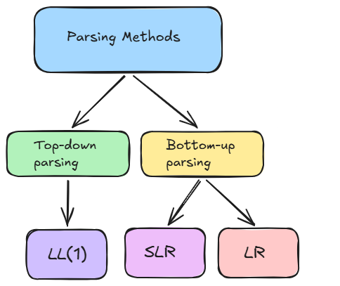

Chapter 2 — Syntax Analysis
“ takes a string of tokens produced by the lexer, and constructs a syntax tree.”
Opening Problem
Here's the while-loop body in the gcd function from the
temp := b ; b := a - ( a / b * b ) ; a := temp
You know exactly what this does. But hand this fragmentto three different people, with nothing but the grammar rules to go on, and ask each to draw the tree showing how the pieces combine. Would they draw the same tree?
For some of the grammar's rules, the answer is: not necessarily, not without more information. For others, surprisingly, yes.
By the end of this chapter you'll know exactly which parts of the Reference Grammar are genuinely ambiguous, how to fix the ones that are, and how a parser mechanically turns a token stream into one unambiguous tree.
Learning Objectives
By the end of this article you should be able to:
- Remember which productions in the Reference Grammar are ambiguous or left-recursive as written.
- Understand why an ambiguous or left-recursive grammar blocks a deterministic top-down parser, and how bottom-up parsing is able to handle a broader class of grammars.
- Apply the nullable, FIRST, and FOLLOW algorithms, and use precedence layering and left-recursion elimination to rewrite an ambiguous rule into an LL(1)-friendly form.
- Analyse a constructed LL(1), SLR, or LR table to determine whether a given cell contains a conflict, and trace which grammar property caused it.
- Evaluate which parsing strategy — LL(1), SLR, or LR — is suitable for a given grammar rule, justifying the choice by what each strategy can and cannot handle.
- Create an LL(1), SLR, or LR parsing table from FIRST/FOLLOW sets or item sets, and use it to trace the parse of a real program fragment.
Core concepts
Two families of parsers build the same kind of tree from opposite directions:

- Top-down: starts at the grammar's start symbol and predicts which production to expand next.
- Bottom-up: starts at the tokens themselves and repeatedly recognises and collapses ("reduces") pieces matching a production's right-hand side.
These are the methods that will be explored below. All three build the same shape of tree for an unambiguous grammar, they just get there differently. Each has different requirements on how the grammar has to be written. That gap is a running thread through the rest of this chapter.
Connecting to What You Already Know
The previous chapter, Lexical Analysis, ended with a finished token stream. That stream is this chapter's input. Nothing here re-reads the source characters; syntax analysis only ever sees the sequence the lexer already produced.
You should also already be comfortable with context-free grammars and derivations from your prerequisite coursework. This chapter turns that into something stricter: not just that a grammar can generate a given token sequence, but which one, single, unambiguous tree it corresponds to, and how a parser builds that tree deterministically rather than by guessing.
Ambiguity
Nullable/First/FOLLOW sets
LL(1)
SLR
LR
What Comes Next
Chapter 3 → Scopes and symbol tables
The type information gathered by CheckExp does not disappear after this phase.